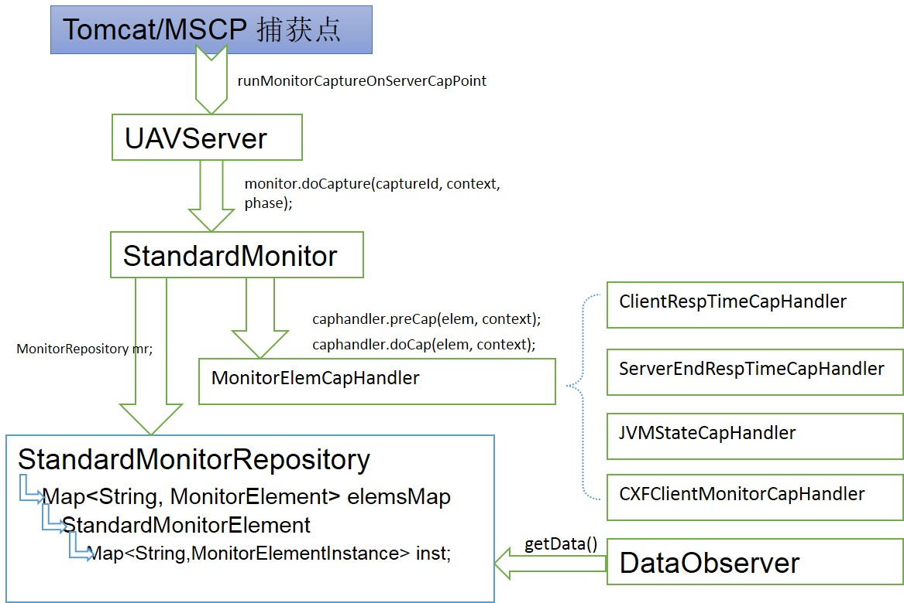
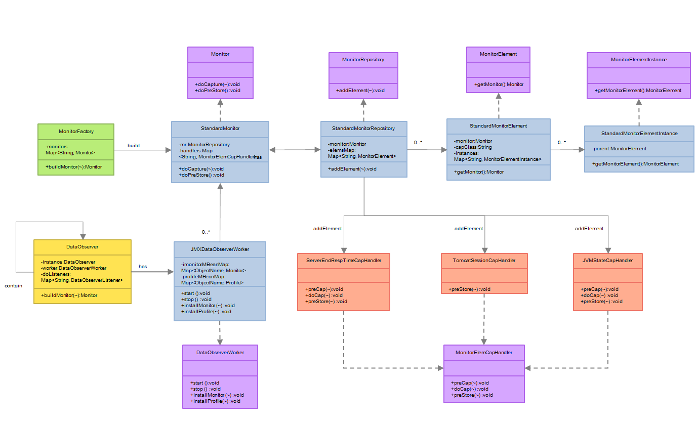

CaptureFramework 运行原理

说明
捕获点: 支持Tomcat、MSCP、Springboot、Jetty埋点
UAVServer单例: 作为统一的捕获入口点
StandardMonitor: 实时数据抓取实现类,负责抓取行为和生成抓取结果
MonitorElemCapHandler: 不同抓取逻辑和抓取点共同接口实现不同埋点逻辑
StandardMonitorRepository: 存储实时数据抓取数据结构
DataObserver: 暴露JMX/HTTP接口数据
关键技术
- JavaAssist
- Monitor捕获体系
- precap/docap
关键类及说明
- Monitor实时监控主要是从DefaultMonitorSupporter类启动初始化StandardMonitor对象,通过CaptureFramwork将monitor对象安装到DataStore对象中
- DataStore提供JMX/HTTP服务供后续MA抓取使用
- MonitorHandler包下的Handler类具体处理Monitor的指标数据计算和统计.
DefaultMonitorSupporter实现
